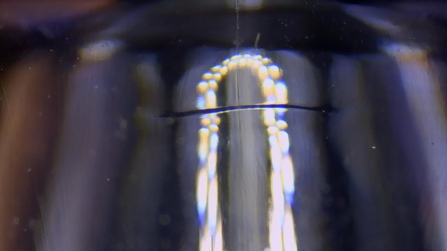
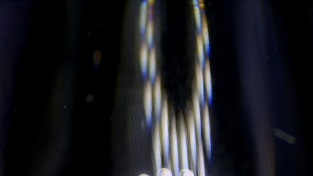

이론이 아닌, 실제 생산 현장에 적용해 검증된 결과입니다.


화장품 용기 캡 사출 성형 현장에서 발생한 웰드 라인 불량을 AI가 진단하고, 실제 시험 성형으로 개선을 검증한 사례입니다.
특정 불량만 개선하고 다른 불량이 악화되는 트레이드오프를 최소화해, 10개 불량 유형 전반이 고르게 낮아지는 조건을 도출했습니다.
기술력과 현장 검증 데이터를 결합한 솔루션입니다.
불량 발생 즉시 AI가 분석해 수 초 안에 개선 조건을 제시합니다. 공정 중단 없이 실시간으로 대응할 수 있습니다.
이론적 기반과 현장 노하우를 데이터로 정량화하고, 교차검증(CV R²)으로 모델 신뢰도를 투명하게 공개합니다.
불량 개선이 다른 품질 지표에 미치는 영향까지 함께 계산해, 10대 불량을 종합적으로 최적화합니다.